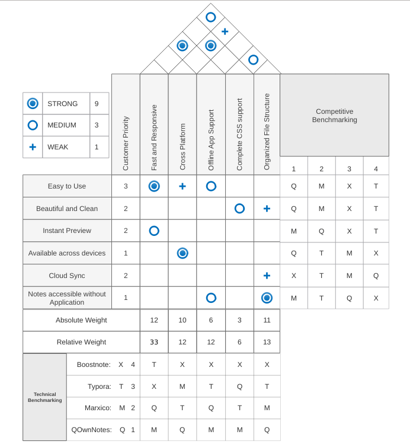

Your browser doesn't support the features required by impress.js, so you are presented with a simplified version of this presentation.
For the best experience please use the latest Chrome, Safari or Firefox browser.
# Boostnote.io - Design Project
## *Open source* note-taking app made for programmers
# Problem Statement
- Normal available text editors are plain and require more effort to stylize
- No Code support available
- Most of the editors are propreitory and closed source.
- As programmers its much easier to type in well formatted text with Markdown
- Markdown supports code formatting inbuilt
# Customer Requirements
- Type in with Markdown
- Easy to Use
- Should be able to add code snippets
- Result should be clean and beautiful
- Available across devices
# Product Functionalities
- Built using tools like Electron which make it available across all platforms.
- Instant Markdown viewing and formatting with Webpack and CSSModules.
- Using CSS for Markdown styling make it much more beautiful and clean to watch.
- Being built with react and redux, App is very fast and responsive
*Finder popup* to quickly search through **all notes and its contents**


# Similar Products
- QOwnNotes
- Marxico
- Caret
- Typora
1.QOwnNotes
- Good Stuff
- Sync Option with myCloud or NextCloud
- Encryption options
- Can add additional scripts easily
- Lacks
- Instant preview
- Boostnote much more clean and beautiful with its interface
-----
2.Marxico
- Good Stuff
- Synced with Evernote
- Inbuilt flowchart support
- Lacks
- Offline support
- Open Source
- Instant preview
- Slow with no Quick search
- Tasks / Todo list support
-----
3.Caret
- Good Stuff
- Auto-Completion and Syntax Assistance
- Inbuilt spell checker
- Live Rendering
- Git Integration
- Lacks
- Not Free or Open Source
- Tasks / Todo list support
-----
4.Typora
- Good Stuff
- Focus Mode
- Flowchart support
- Live Rendering
- Lacks
- Not Open Source
- Quick search